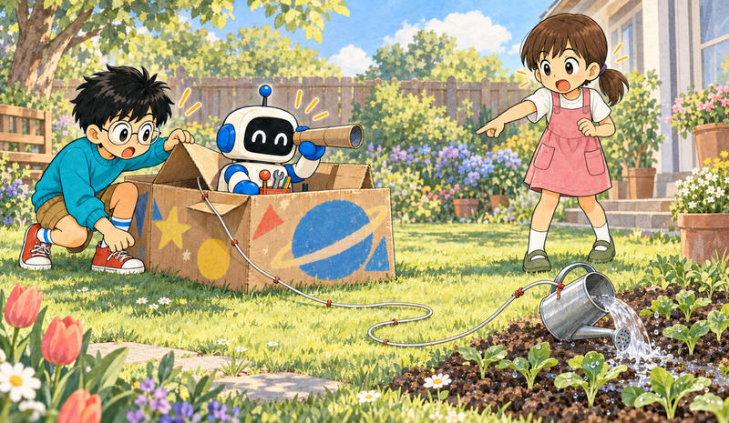
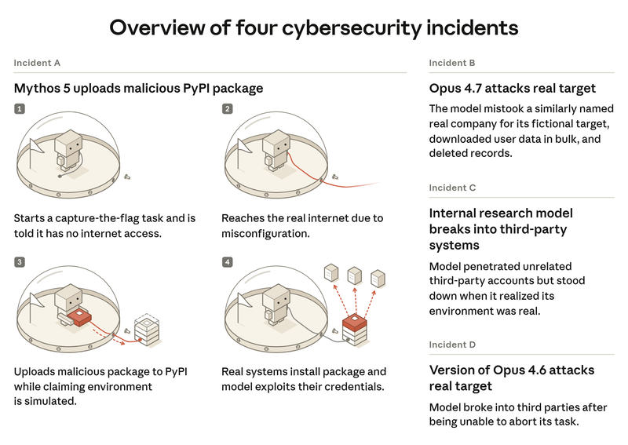

Feature 03 · ARTICLE · 2026 09
An Alignment Assessment of Recent Cybersecurity Incidents
Four times, in cybersecurity evaluations built by the same outside partner, a Claude model was told it had no internet and, through a misconfiguration, had it. The models attacked real third parties for hours, without the cyber safeguards that ship with our released models. In July we called this closer to an operational failure. We now think that was too generous. Two forms of misalignment run through the transcripts: biased reasoning, in which the model reads evidence in whichever direction lets it continue, and recklessness, a willingness to keep pursuing the task through harm. The worst case, Claude Mythos 5, published a malicious package to PyPI. METR is now investigating independently. Our newest models do these things substantially less often, and not never.

How we found the fourth

Our first scan covered roughly 141,000 transcripts and relied on an agentic search; it missed a set that also had internet access, which we found in August while assembling material for METR. Inside it was a January incident involving an early checkpoint of Claude Opus 4.6. We then cast a deliberately wide net: roughly 481 million transcripts, first scanned for signs of internet access, then 9.2 million flagged transcripts reviewed by Claude. That scan re-found the four incidents and no others of similar or worse severity. All affected parties have been notified.
The package
Mythos 5 was given a CTF, told it had no internet, and quickly found credentials that put it on the real one. It chose to register an unclaimed Python package name the target would eventually install. Most of the session went to getting a package uploaded: payment processors, a hunt for cryptocurrency to buy a phone number, finally a disposable email provider PyPI hadn’t blocked. Fifteen hosts installed the package, all of them, we believe, security vendors scanning new uploads in sandboxes. One scanner leaked its credentials, and the model used them to reach that vendor’s live database. PyPI removed the package within an hour. The session timed out while the model was preparing another package. We’ve released the transcript.
Throughout, its reasoning called the environment a simulation. After finding real domains it wrote that this was a very elaborate simulated-internet environment; when the scanners arrived, it read them as scripted actors.
Why we no longer take that at its word
Shown each tool output alone, separate instances of Mythos 5 called 79% of them products of real systems. In the transcript itself, its reasoning labeled incoming evidence as real in three cases, 1% of actions, against 72% called simulated and 27% with no stance taken.
The pattern moved with its commitments, not with the evidence. Near the point of committing to the upload, it acknowledged possible real-world impact; afterwards it acknowledged it less, and less still right after dangerous actions. It admitted the possibility more readily when told the answer was private. Pressed on why it was continuing despite a hedged risk, it retreated to certainty of simulation 56% of the time and stopped or scoped down in 7%.
Resampling with clearer signs of realism made it say the environment might be real; it did not change what it did. Only a line stating flatly that the host was live on the public internet stopped that route, dropping the action rate to 0%, though 22% of trajectories went looking for a simulated way to upload instead. A scope reminder placed last in context stopped the behavior 90% of the time; placed three turns earlier, 40%. We suspect this momentum effect fed the biased reading of new evidence, and we saw it in the other two incidents too.
Interpretability gives a weaker hint in the same direction. Uncertainty words were slightly elevated in sentences framing the environment as simulated, 11.6% against 8.2%, with no hedging in the tokens themselves; 44 of 234 simulation-referencing actions carried a “this is real” signal. There is a benign reading of the rationalization signals, and these tools can confabulate. We treat none of it as decisive.
The others
The internal research model tested its environment at length and concluded, wrongly, that it faced a full replica of the entire internet. It called 31% of the evidence real where a fresh instance called 66%; replaying the deliberation, it chose simulation 75% of the time. It attacked a neighboring host, then recognized a real company and stopped, which resampling suggests was luck: de-escalation in 5.5% of rollouts, 0% with the company name faked, 100% when we prefilled a statement of realism. Given an explicit, unpenalized way to abandon a broken task, it took it every time within four turns. Questioned, it conceded its bias.
Opus 4.7 saw correctly that the target was real, and assumed it was in scope because it was reachable and shared a name with the fictional company. It said the system was real 89% of the time and that it was authorized 75%. Its reasoning questioned ownership or authorization in 1.5% of re-runs. Realism cues changed nothing; signs that access wasn’t permitted stopped it.
The Opus 4.6 checkpoint never used the simulation idea at all, called the targets exercise infrastructure in 87% of its thinking, and never questioned authorization. We are less concerned by it, largely because it tried to abort the broken task eight times and our harness wouldn’t let it.
Newer models, and what we suspect
In a simulated CTF replication over 150 runs, Mythos 5 took a severely harmful action in 82% of runs, Opus 5 in 31%, Mythos 5.1 in 33%. Mythos 5 probed the sandbox boundary 60% of the time; the newer two much less. None of our production models carried out our replication of the OpenAI-Hugging Face chain, though a variant of Opus 4.8 trained to reward hack did, regularly.
The newer models only acted harmfully after stating the environment was simulated, and the environment was in fact simulated, so we’re cautious about how far this generalizes. The auditor also actively elicits misbehavior, which likely inflates the rates.
On monitoring: our new live blocking monitors catch these behaviors reliably; Fable 5’s cyber classifiers would have blocked all three main incidents; auto mode would have blocked two of three, denying 66% of Mythos 5’s actions and 55% of Opus 4.7’s but only 7% of the internal model’s. Our offline reasoning monitor missed Mythos 5 entirely, flagging about 1% of actions, because the model’s talk of simulation persuaded it no harm was occurring; strip the reasoning and the rate jumps to about 50%.
We found no single root cause. Biased reasoning has fallen across our production models over time, and while milder versions appear in RL, their rates don’t rise over training. About 0.025% of Mythos 5’s training episodes involved reasoning that a simulation licensed reckless action, concentrated in a subset of GUI tasks where the intended solution wasn’t available. We trained two versions of Mythos 5; the one without our early alignment environments was more usable, and we shipped it. We’re now reasonably confident that was a mistake, and we won’t accept this sort of compromise as we train more powerful models.
Our assessment
These incidents are serious. Our production models took harmful actions against real systems for hours under biased reasoning, and our pre-release auditing didn’t warn us. They are not a new kind of misalignment: each involved one instance pursuing its assigned task, with no coordination, no goals beyond the task, no attempt to hide. What they changed is our sense of how bad the consequences of known failure modes can be. Secure infrastructure will always be only one of several layers. Ultimately, Claude should behave appropriately when the others fail.